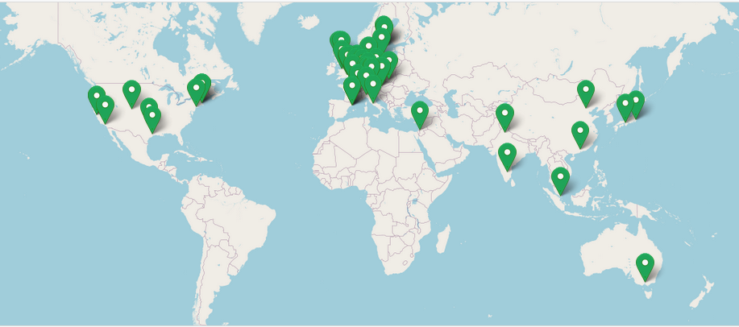
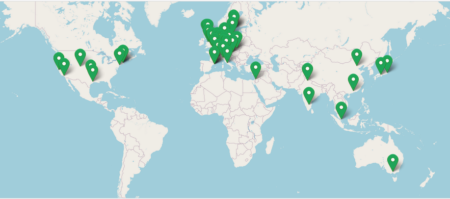

nf-core
Introduction to nf-core
nf-core is a community effort to collect a curated set of analysis pipelines built using Nextflow. As such nf-core is:
A community of users and developers.
A curated set of analysis pipelines build using Nextflow.
A set of guidelines (standard).
A set of helper tools.
Community
The nf-core community is a collaborative effort that has been growing since its creation in early 2018, as you can check on the nf-core stats site.
 

{kind=link}
Pipelines
Currently, there are 72 pipelines that are available as part of nf-core (41 released, 25 under development and 6 archived). You can browse all of them on this link.
Guidelines
All nf-core pipelines must meet a series of requirements or guidelines. These guidelines ensure that all nf-core pipelines follow the same standard and stick to current computational standards to achieve reproducibility, interoperability and portability. The guidelines are make available on this link.
Helper tools
To ease the use and development of nf-core pipelines, the community makes available a set of helper tools that we will introduce on this tutorial.
Paper
The main nf-core paper was published in 2020 in Nature Biotechnology and describes the community and the nf-core framework.

Installation
You can use Conda to install nf-core tools. In the command below we create a new named environment that includes nf-core and then, we activate it.
conda create -n py38_test python=3.8 nf-core -c bioconda -c conda-forge -y
conda activate nf-core
Tip
Find alternative ways of installation on the nf-core documentation
We can now check the nf-core available commands:
$ nf-core -h
,--./,-.
___ __ __ __ ___ /,-._.--~\
|\ | |__ __ / ` / \ |__) |__ } {
| \| | \__, \__/ | \ |___ \`-._,-`-,
`._,._,'
nf-core/tools version 2.6 - https://nf-co.re
Usage: nf-core [OPTIONS] COMMAND [ARGS]...
nf-core/tools provides a set of helper tools for use with nf-core Nextflow pipelines.
It is designed for both end-users running pipelines and also developers creating new pipelines.
╭─ Options ────────────────────────────────────────────────────────────────────────────────────────╮
│ --version Show the version and exit. │
│ --verbose -v Print verbose output to the console. │
│ --log-file -l <filename> Save a verbose log to a file. │
│ --help -h Show this message and exit. │
╰──────────────────────────────────────────────────────────────────────────────────────────────────╯
╭─ Commands for users ─────────────────────────────────────────────────────────────────────────────╮
│ list List available nf-core pipelines with local info. │
│ launch Launch a pipeline using a web GUI or command line prompts. │
│ download Download a pipeline, nf-core/configs and pipeline singularity images. │
│ licences List software licences for a given workflow. │
╰──────────────────────────────────────────────────────────────────────────────────────────────────╯
╭─ Commands for developers ────────────────────────────────────────────────────────────────────────╮
│ create Create a new pipeline using the nf-core template. │
│ lint Check pipeline code against nf-core guidelines. │
│ modules Commands to manage Nextflow DSL2 modules (tool wrappers). │
│ schema Suite of tools for developers to manage pipeline schema. │
│ bump-version Update nf-core pipeline version number. │
│ sync Sync a pipeline TEMPLATE branch with the nf-core template. │
╰──────────────────────────────────────────────────────────────────────────────────────────────────╯
╭─ Commands ───────────────────────────────────────────────────────────────────────────────────────╮
│ subworkflows Commands to manage Nextflow DSL2 subworkflows (tool wrappers). │
╰──────────────────────────────────────────────────────────────────────────────────────────────────╯
As shown in the screenshot, nf-core tools provides with some commands meant for users and with some commands meant for developers. Here, we will discuss how nf-core can be used from a user point of view.
Tip
If you are interested in learn how nf-core could help you developing your pipelines please refer to the tools `page <https://nf-co.re/tools/>`__in the nf-core site or follow `this https://nf-co.re/developers/tutorials/nf_core_contributing_overview>`__ tutorial.
Commands for users
Listing pipelines
To show all the nf-core available pipelines, we can use the nf-core list command. This command also provides some other information as the last version of each of the nf-core pipelines, its publication and and when you last pulled the pipeline to your local system.
$ nf-core list
,--./,-.
___ __ __ __ ___ /,-._.--~\
|\ | |__ __ / ` / \ |__) |__ } {
| \| | \__, \__/ | \ |___ \`-._,-`-,
`._,._,'
nf-core/tools version 2.6 - https://nf-co.re
┏━━━━━━━━━━━━━━━━━━━━━━━━┳━━━━━━━┳━━━━━━━━━━━━━━━━┳━━━━━━━━━━━━━━┳━━━━━━━━━━━━━━━━┳━━━━━━━━━━━━━━━━━━━━━━┓
┃ Pipeline Name ┃ Stars ┃ Latest Release ┃ Released ┃ Last Pulled ┃ Have latest release? ┃
┡━━━━━━━━━━━━━━━━━━━━━━━━╇━━━━━━━╇━━━━━━━━━━━━━━━━╇━━━━━━━━━━━━━━╇━━━━━━━━━━━━━━━━╇━━━━━━━━━━━━━━━━━━━━━━┩
│ coproid │ 7 │ 1.1.1 │ yesterday │ - │ - │
│ cutandrun │ 31 │ 3.0 │ 1 weeks ago │ - │ - │
│ smrnaseq │ 44 │ 2.1.0 │ 2 weeks ago │ 16 minutes ago │ Yes (v2.1.0) │
│ nascent │ 5 │ 2.0.0 │ 2 weeks ago │ - │ - │
│ hgtseq │ 12 │ 1.0.0 │ 2 weeks ago │ - │ - │
│ hlatyping │ 35 │ 2.0.0 │ 3 weeks ago │ - │ - │
│ demultiplex │ 14 │ 1.0.0 │ 4 weeks ago │ - │ - │
│ scrnaseq │ 64 │ 2.1.0 │ 4 weeks ago │ - │ - │
│ chipseq │ 129 │ 2.0.0 │ 1 months ago │ 18 minutes ago │ Yes (v2.0.0) │
│ rnaseq │ 529 │ 3.9 │ 1 months ago │ 19 minutes ago │ Yes (v3.9) │
│ isoseq │ 5 │ 1.1.1 │ 1 months ago │ - │ - │
│ sarek │ 205 │ 3.0.2 │ 1 months ago │ 7 months ago │ No (v2.7.1) │
│ airrflow │ 22 │ 2.3.0 │ 2 months ago │ - │ - │
│ ampliseq │ 99 │ 2.4.0 │ 2 months ago │ - │ - │
│ mag │ 103 │ 2.2.1 │ 2 months ago │ - │ - │
│ epitopeprediction │ 22 │ 2.1.0 │ 3 months ago │ - │ - │
│ eager │ 76 │ 2.4.5 │ 3 months ago │ - │ - │
│ viralrecon │ 79 │ 2.5 │ 4 months ago │ 12 months ago │ No (v2.2) │
│ rnafusion │ 81 │ 2.1.0 │ 4 months ago │ - │ - │
│ fetchngs │ 64 │ 1.7 │ 4 months ago │ 5 months ago │ No (v1.5) │
│ circdna │ 10 │ 1.0.1 │ 5 months ago │ - │ - │
│ nanoseq │ 88 │ 3.0.0 │ 5 months ago │ - │ - │
│ rnavar │ 13 │ 1.0.0 │ 5 months ago │ - │ - │
│ mnaseseq │ 7 │ 1.0.0 │ 5 months ago │ - │ - │
│ atacseq │ 119 │ 1.2.2 │ 6 months ago │ 20 hours ago │ No (dev - 88d4e6d) │
[..truncated..]
Tip
The pipelines can be sorted by latest release (-s release, default), by the last time you pulled a local copy
(-s pulled), alphabetically (-s name) or by the number of GitHub stars (-s stars).
Filtering available nf-core pipelines
It is also possible to use keywords after the list command so that the list of pipelines is shortened to those
matching the keywords or including them in the description. We can use the command below to filter on the rna
and rna-seq keywords:
$ nf-core list rna rna-seq
,--./,-.
___ __ __ __ ___ /,-._.--~\
|\ | |__ __ / ` / \ |__) |__ } {
| \| | \__, \__/ | \ |___ \`-._,-`-,
`._,._,'
nf-core/tools version 2.6 - https://nf-co.re
┏━━━━━━━━━━━━━━━━━━━━━━━━┳━━━━━━━┳━━━━━━━━━━━━━━━━┳━━━━━━━━━━━━━┳━━━━━━━━━━━━━━┳━━━━━━━━━━━━━━━━━━━━━━┓
┃ Pipeline Name ┃ Stars ┃ Latest Release ┃ Released ┃ Last Pulled ┃ Have latest release? ┃
┡━━━━━━━━━━━━━━━━━━━━━━━━╇━━━━━━━╇━━━━━━━━━━━━━━━━╇━━━━━━━━━━━━━╇━━━━━━━━━━━━━━╇━━━━━━━━━━━━━━━━━━━━━━┩
│ smrnaseq │ 39 │ 2.0.0 │ 5 days ago │ 7 months ago │ No (v1.1.0) │
│ rnaseq │ 465 │ 3.8.1 │ 1 weeks ago │ 6 days ago │ Yes (v3.8.1) │
│ rnafusion │ 71 │ 2.0.0 │ 3 weeks ago │ - │ - │
│ dualrnaseq │ 7 │ 1.0.0 │ 1 years ago │ - │ - │
│ circrna │ 18 │ dev │ - │ - │ - │
│ lncpipe │ 23 │ dev │ - │ - │ - │
│ scflow │ 12 │ dev │ - │ - │ - │
│ spatialtranscriptomics │ 3 │ dev │ - │ - │ - │
└────────────────────────┴───────┴────────────────┴─────────────┴──────────────┴──────────────────────┘
Launching pipelines
The launch command enables to launch nf-core, and also Nextflow, pipelines via a web-based graphical interface or an
interactive command-line wizard tool. This command becomes handy for pipelines with a considerable number of parameters
since it displays the documentation alongside each of the parameters and validate your inputs.
We can now launch an nf-core pipeline:
nf-core launch
Note
The pipelines can be sorted by latest release (-s release, default), by the last time you pulled a local copy
(-s pulled), alphabetically (-s name) or by the number of GitHub stars (-s stars).
To render the description of the parameters, its grouping and defaults, the tool uses the nextflow_schema.json. This
JSON file is bundled with the pipeline and includes all the information mentioned above, see an example here.
The chosen not default parameters are dumped into a JSON file called nf-params.json. This file can be provided to new
executions using the -params-file flag. See below an example:
It is a good practice in terms of reproducibility to explicitly indicate the version (revision) of the pipeline that
you want to use, this can be indicated using the -r flag e.g. nf-core launch rnaseq -r 3.8.1.
Exercise
Pull version 3.8.1 of the nf-core/rnaseq pipeline, run it using the nf-core launch command and produce the nf-params.json.
Solution
nextflow pull nf-core/rnaseq -r 3.8.1
nf-core launch rnaseq -r 3.8.1
nf-core configs and profiles
nf-core configs
We have already introduced Nextflow configuration files and profiles during the course. Config files are used by nf-core pipelines to specify the computational requirements of the pipeline, define custom parameters and set which software management system to be used (Docker, Singularity or Conda). As an example take a look to the base.config that is used to set sensible defaults for the computational resources needed by the pipeline.
nf-core core profiles
nf-core pipelines use profiles to bundle a set of configuration attributes. By doing so, we can activate these
attributes by using the -profile Nextflow command line option. All nf-core pipelines come along with a set of common
"Core profiles" that include the conda, docker and singularity that define which software manager to use and the
test profile that specifies a minimal test dataset to check that the pipelines works properly.
Note
Each configuration file can include one or several profiles
Institutional profiles
Institutional profiles are profiles where you can specify the configuration attributes for your institution system. They are
hosted in https://github.com/nf-core/configs and all pipelines pull this repository when a pipeline is run. The idea is that
these profiles set the custom config attributes to run nf-core pipelines in your institution (scheduler, container technology,
resources, etc.). This way all the users in a cluster can make use of the profile just setting the profile of your institution
(-profile institution).
Tip
You can use more than profile at a time by separating them by a comma without space, e.g. -profile test,docker
Custom config
If you need to provide any custom parameter or setting when running a nf-core pipeline, you can do it by creating a local custom
config file and add it to your command with the -c flag.

*Image from https://carpentries-incubator.github.io/workflows-nextflow.
Note
Profiles will be prioritized from left to right in case conflicting settings are found.
Running pipelines with test data
All nf-core pipelines include a special configuration named test. This configuration defines all the files and parameters to test
all pipeline functionality with a minimal dataset. Thus, although the functionality of the pipeline is maintained often the results
are not meaningful. As an example, find on the snippet below the test configuration of the nf-core/rnaseq.
pipeline.
Tip
You can find the current version of the above config above here
Downloading pipelines
If your HPC system or server does not have an internet connection you can still run nf-core pipelines by fetching the pipeline files first and then, manually transferring them to your system.
The nf-core download option simplifies this process and ensures the correct versioning of all the code and containers
needed to run the pipeline. By default, the command will download the pipeline code and the institutional nf-core/configs
files. Again, the -r flag allows to fetch a given revision of the pipeline.
Finally, you can also download any singularity image files required by the pipeline, if you specify the --singularity flag.
Tip
If you don't provide any option to `nf-core download an interactive prompt will ask you for the required options.
We can now try to download the rnaseq pipeline using the command below:
nf-core download rnaseq
Now we can inspect the structure of the downloaded directory:
$ tree -L 2 nf-core-rnaseq-3.8.1/
nf-core-rnaseq-3.8.1/
├── configs
│ ├── ..truncated..
│ ├── nextflow.config
│ ├── nfcore_custom.config
│ └── pipeline
├── singularity-images
│ ├── depot.galaxyproject.org-singularity-bbmap-38.93--he522d1c_0.img
│ ├── ..truncated..
│ └── depot.galaxyproject.org-singularity-umi_tools-1.1.2--py38h4a8c8d9_0.img
└── workflow
├── CHANGELOG.md
├── ..truncated..
├── main.nf
├── modules
└── workflows
Pipeline output
nf-core pipelines produce a MultiQC report which summarises results at the end of the execution along with software versions of the different tools used, nf-core pipeline version and Nextflow version itself.
Each pipeline provides an example of a MultiQC report from a real execution in the nf-core website. For instance you can find the report corresponding to the current version of nf-core/rnaseq here.
Interesting links
Acknowledgements
This nf-core tutorial has been build taking as inspiration the nf-core official tools documentation and the Carpentries materials "Introduction to Bioinformatics workflows with Nextflow and nf-core" that can be find here.